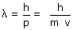

Una partícula puede comportarse como una onda cuya longitud de onda vale:  Para que se muestre el aspecto ondulatorio de la partícula esta debe interaccionar con objetos mayores que su longitud de onda. Si lanzamos un chorro de electrones a alta velocidad contra una red cristalina estos se difractarán igual que lo harían los rayos X. El tamaño de los agujeros de una red cristalina es del orden de 10-10 m, por tanto la longitud de onda del electrón, para se comporte como una onda, tiene que ser 10-10 m como mucho. Para el electrón el cociente h/m es del orden de 103 m/(m/s) por tanto la velocidad tendrá que ser del orden de 107 m/s |